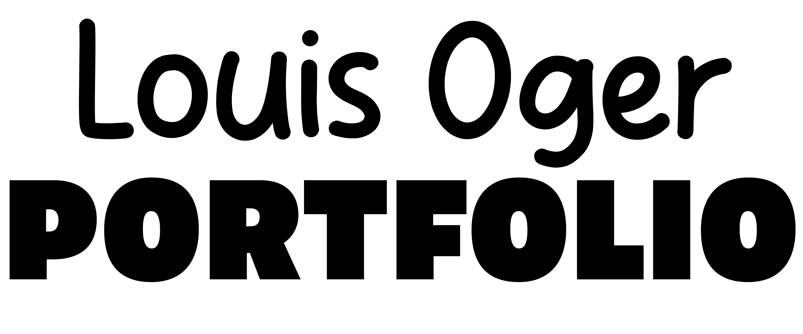

<DOCTYPE HTML>
    <html>
    <head>
        <title>Stop motion</title>
        <link rel="stylesheet" href="audiovisuel.css">
        <meta charset="UTF-8">
    </head>
    <body>
        <div class="header">
            <div class="cv">
                <a href="OGERLouis_Portfolio.pdf" download>
                    
                </a>
            </div>
            <div class="mail">
                <a href="mailto:louisoger359@gmail.com" mailto>
                    
                </a>
            </div>
            <div class="logo">
                <a id="logocontainer" href="HTML/index.html">
                    
                </a>
            </div>
            <div class="sketch">
                <a href="https://louisog.itch.io/">
                    
                </a>
            </div>
            <div class="itch">
                <a href="https://sketchfab.com/louisoger359/models">
                    
                </a>
            </div>
        </div>


        <div class="Content">
            <div class="ProjectTitle">
                <a id="home" href="index.html">
                    <h1>Retour à l'accueil</h1>
                </a>
                <h1 id="Title">Stop motion</h1>
            </div>
            <div class="ProjectBody">
                <div id="ProjectScript">
                    <h1 id="ProjectText">
                        Ce projet de première année consistait à réaliser une 
                        vidéo animée de 10 secondes autour d’un thème. Avec
                        mon binôme, nous sommes partis sur des Mayas en pâte 
                        à modeler qui s’extasiaient autour d’une bouteille de 
                        vin géante.
                    </h1>
                </div>
                <div id="ProjectImage">
                    <video controls>
                        <source src="PICTURES/PROJECTPICTURES/MAYA/maya.mp4" type="video/mp4" />
                        <p>
                            Votre navigateur ne prend pas en charge les vidéos HTML5. Voici
                            <a href="PICTURES/PROJECTPICTURES/MAYA/maya.mp4">un lien pour télécharger la vidéo</a>.
                        </p>
                    </video>

                </div>
            </div>
        </div>


        <div class="footer">
            <div class="footerlogo">
                <a id="returnbutton" href="maya.html">
                    <p>Retour en haut de la page</p>
                </a>
                <p id="versionnumber">Email : louisoger359@gmail.com</p>
                <p id="versionnumber">V0.3</p>
                <p><a href="https://fr.freepik.com/photos-gratuite/nuages-duveteux-ciel-tir-vertical_12108697.htm#fromView=search&page=1&position=13&uuid=09f5750d-13d2-4451-8838-0a679bddd19d">Source de l'image de fond</a></p>
            </div>
        </div>
    </body>
</html>


